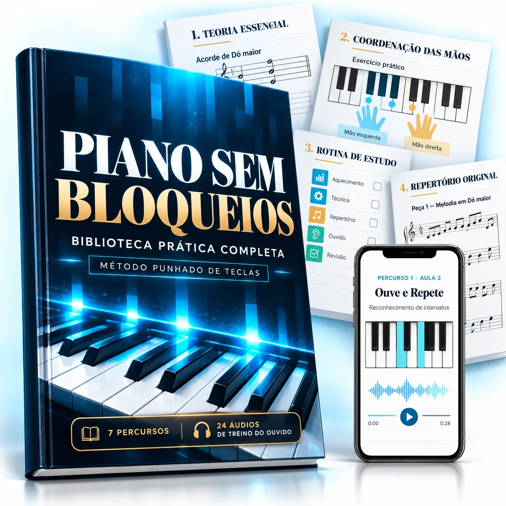

Parabéns pela sua aquisição
Deu o primeiro passo para tocar piano em 21 dias.
O Piano & Teclado em 21 Dias dá-lhe um caminho para começar. E, à medida que avança, é natural surgirem novas dúvidas: como coordenar as duas mãos, manter o ritmo ou escolher a próxima peça?
Foi a pensar nesse momento que reunimos o Piano Sem Bloqueios: uma biblioteca prática para acompanhar o treino depois dos primeiros passos. Estamos a apresentar esta condição especial nesta etapa, a novos alunos que acabaram de adquirir o método.
Piano Sem Bloqueios é material digital, num pagamento único.
Este valor especial fica disponível hoje, na data de hoje, até às 23h59 (hora de Portugal).
Por agora, fico só com o métodoO checkout desta oferta está a ser configurado.

O que vem na biblioteca
Sete caminhos para continuar a tocar
Não precisa de fazer tudo de uma vez. Escolha o que o pode ajudar hoje, pratique um pouco e volte à música.
Independência das mãos
18 exercícios progressivos em três níveis, começando com as mãos separadas e juntando-as ao seu ritmo.
Ritmo e tempo
12 padrões em 2/4, 3/4 e 4/4, com palmas, contagem, metrónomo, balada e valsa.
Leitura visual
Pauta, claves, figuras rítmicas e exercícios curtos para ligar o que vê ao teclado.
Escalas e dedilhados
Desenhos das teclas, numeração dos dedos e passagem do polegar, primeiro com cada mão.
Treino do ouvido
24 áudios de direção, notas e acordes maiores ou menores, com respostas no fim do livro.
Rotinas de prática
Planos de 10, 20 e 30 minutos e uma folha para registar a evolução.
Repertório progressivo
Oito peças originais em três níveis, com melodia, cifras, baixo e metas de prática.
Pronto para usar
Material digital com 70 páginas de conteúdo e 24 ficheiros áudio. Sem envio físico.